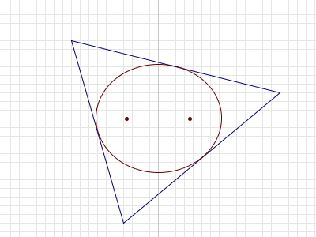

Project Euler 385
Project Euler 385
题目
Ellipses inside triangles
For any triangle \(T\) in the plane, it can be shown that there is a unique ellipse with largest area that is completely inside \(T\).

For a given \(n\), consider triangles \(T\) such that:
- the vertices of \(T\) have integer coordinates with absolute value \(\le n\), and
- the foci\(^1\) of the largest-area ellipse inside \(T\) are \((\sqrt{13},0)\) and \((-\sqrt{13},0)\).
Let \(A(n)\) be the sum of the areas of all such triangles.
For example, if \(n = 8\), there are two such triangles. Their vertices are \((-4,-3),(-4,3),(8,0)\) and \((4,3),(4,-3),(-8,0)\), and the area of each triangle is \(36\). Thus \(A(8) = 36 + 36 = 72\).
It can be verified that \(A(10) = 252, A(100) = 34632\) and \(A(1000) = 3529008\).
Find \(A(1 000 000 000)\).
\(^1\) The foci (plural of focus) of an ellipse are two points \(A\) and \(B\) such that for every point \(P\) on the boundary of the ellipse, \(AP + PB\) is constant.
解决方案
页面 Steiner inellipse 介绍了：三角形内与三边中点相切的唯一内接椭圆称为 Steiner inellipse（中点内切椭圆），并且它在所有内接椭圆中面积最大。
因此，题目所说的最大面积椭圆就是 Steiner inellipse。我们接下来只需研究：哪些整点三角形的 Steiner inellipse 的焦点为 \(\pm\sqrt{13}\)。
将平面点 \((x,y)\) 视为复数 \(z=x+iy\)。设三角形三顶点为 \(z_1,z_2,z_3\)（不共线），构造三次多项式\(p(z)=(z-z_1)(z-z_2)(z-z_3).\)
Marden 定理指出：三角形的 Steiner inellipse 的两个焦点，恰为导数 \(p'(z)\) 的两个零点。
题目给定焦点是 \(\pm\sqrt{13}\)，因此我们要求\(p'(z)=0\)的两个根分别是\(\sqrt{13},-\sqrt{13}\).
将 \(p(z)\) 写成首一三次多项式：\(p(z)=z^3-sz^2+tz-u,\)其中\(s=z_1+z_2+z_3, t=z_1z_2+z_2z_3+z_3z_1.\)则\(p'(z)=3z^2-2sz+t.\)已知 \(p'(z)=0\) 的根为 \(\pm\sqrt{13}\)，因此：
- 根和为 \(0\)，即 \(\dfrac{2s}{3}=0 \Rightarrow s=0\)；
- 根积为 \(-13\)，即 \(\dfrac{t}{3}=-13 \Rightarrow t=-39\)。
于是得到两个关键约束：\(z_1+z_2+z_3=0,z_1z_2+z_2z_3+z_3z_1=-39.\)
第一条意味着三角形重心在原点；对本题很重要，因为整点条件会强烈限制可行形状。
令\(z_3=-(z_1+z_2),\)代入第二条：\(z_1z_2+z_2(-z_1-z_2)+(-z_1-z_2)z_1=-39.\)化简得\(-(z_1^2+z_1z_2+z_2^2)=-39\Longrightarrow z_1^2+z_1z_2+z_2^2=39.\)注意右侧是实数，因此左侧虚部必须为 \(0\)。
令\(z_1=x_1+iy_1, z_2=x_2+iy_2,\)其中 \(x_1,y_1,x_2,y_2\in\mathbb Z\)。计算\(z_1^2+z_1z_2+z_2^2\)并分别取实部与虚部，可得到（这一步是纯代数展开）：
虚部为 0： \[ (2x_1+x_2)y_1+(x_1+2x_2)y_2=0 \tag{1} \]
实部为 39： \[ (x_1^2+x_2^2+x_1x_2)-(y_1^2+y_2^2+y_1y_2)=39. \tag{2} \]
再由 \(z_3=-(z_1+z_2)\) 得第三个顶点\((x_3,y_3)=(-(x_1+x_2),-(y_1+y_2)),\)自动是整点。
观察方程\((1)\)，得\((2x_1+x_2)y_1=-(x_1+2x_2)y_2.\)
为了让比例可控，令\(x_1=ax, x_2=bx,\)其中 \(a,b\in\mathbb Z\)，\(x\in\mathbb Z\)，并且取 \(\gcd(a,b)=1\)（把公共因子吸收到 \(x\) 里）。
那么方程\((1)\)变成\((2a+b)y_1=-(a+2b)y_2.\)取一个整数参数 \(y\)，令\(y_1=(a+2b)y, y_2=-(2a+b)y,\)即可恒满足方程\((1)\)。
因此我们得到一组完整结构：
\[ \begin{aligned} (x_1,y_1)&=(ax,(a+2b)y),\\ (x_2,y_2)&=(bx,-(2a+b)y),\\ (x_3,y_3)&=(-(a+b)x,(a-b)y). \end{aligned} \tag{O} \]
把 \((O)\) 代入方程\((2)\)。先注意一个关键恒等式（直接展开即可验证）：\(y_1^2+y_2^2+y_1y_2=3(a^2+ab+b^2)y^2.\)而\(x_1^2+x_2^2+x_1x_2=(a^2+ab+b^2)x^2.\)代回方程\((2)\)：\((a^2+ab+b^2)x^2-3(a^2+ab+b^2)y^2=39,\)即
\[ (a^2+ab+b^2)(x^2-3y^2)=39. \tag{P} \]
记\(S=a^2+ab+b^2(>0), D=x^2-3y^2.\)则 \((P)\) 变成\(SD=39=3\cdot 13.\)
因此，\(S\) 必须是 \(39\) 的正因子：\(1,3,13,39\)。
- 若 \(D=39\)，即 \(x^2-3y^2=39\)。看模 \(4\)：
- 若 \(y\) 为偶数，则 \(3y^2\equiv 0\pmod4\)，需 \(x^2\equiv 3\pmod4\) 不可能；
- 若 \(y\) 为奇数，则 \(3y^2\equiv 3\pmod4\)，需 \(x^2\equiv 2\pmod4\) 不可能。 所以 无解。
- 若 \(D=3\)，即 \(x^2-3y^2=3\)。模 \(3\) 下左边 \(\equiv x^2\)，只能是 \(0,1\)，不可能等于 \(0\) 但同时满足整除结构（也可直接推出矛盾），最终 无非退化解。
因此只有：\((S,D)=(3,13)\)或\((39,1).\)也就是说，本题所有三角形分成两大族：
- 族 A： \(S=3,D=13\)
- 族 B： \(S=39,D=1\)
接下来分别处理这两族解。
族 A：\(x^2-3y^2=13\)
解 \(a^2+ab+b^2=3\)，互素整数解（考虑对称等价后）可取代表：\((a,b)=(1,1).\)
代入 \((O)\) 得到顶点：\((x_1,y_1)=(x,3y),(x_2,y_2)=(x,-3y),(x_3,y_3)=(-2x,0).\)
用行列式可以得到面积为：\(\dfrac12\left|\det((x_2,y_2)-(x_1,y_1),(x_3,y_3)-(x_1,y_1))\right|=9|xy|.\)
取 \(x,y>0\)，面积为 \(9xy\)。坐标绝对值最大只可能来自 \(2x\) 或 \(3y\)，因此要求\(2x\le n, 3y\le n.\)
这一族的核心是\(x^2-3y^2=13.\)把 \(x+y\sqrt3\) 看作 \(\mathbb Z[\sqrt3]\) 的元素，其范数是\(N(x+y\sqrt3)=x^2-3y^2.\)
基本单位 \(2+\sqrt3\) 的范数为 \(1\)，因此乘以它会保持 \(x^2-3y^2\) 不变：\((x+y\sqrt3)(2+\sqrt3)= (2x+3y) + (x+2y)\sqrt3.\)所以递推为
\[ x' = 2x+3y, y'=x+2y. \tag{R} \]
而 \(x^2-3y^2=13\) 的最小正解有两组：\((4,1), (5,2).\)
它们各自用递推 \((R)\) 生成两条无交的解序列。每个 \((x,y)\) 还会产生关于 \(y\)-轴的镜像三角形，因此每项贡献 2 个三角形：
\[\Delta A_A = 2\cdot 9xy = 18xy.\]
族 B：\(x^2-3y^2=1\)
解 \(a^2+ab+b^2=39\)。在对称等价下可以取两种代表：\((a,b)=(2,5)\)与\((5,2).\)例如取 \((2,5)\)，由 \((O)\) 得顶点：\((2x,12y), (5x,-9y), (-7x,-3y).\)不过\((5,2)\) 给出另一种旋转后的形状，两者都必须计入。
类似的。对 \((O)\) 做一次统一行列式计算，可以得到三角形的面积为：\(3S|xy|=117|xy|.\)坐标最大值来自 \(|-7x|\) 与 \(|12y|\)，因此约束为：\(7x\le n, 12y\le n.\)
同样由单位 \(2+\sqrt3\) 得到相同递推 \((R)\)，最小正解为 \((2,1)\)，从它生成全部正解。
对称性方面：两种 \((a,b)\) 代表，再加上关于 \(y\)轴镜像，会使每个 \((x,y)\) 对应 4 个不同三角形（互不重复）。所以每项贡献：
\[\Delta A_B = 4\cdot 117xy = 468xy.\]
最终，我们迭代出所有解，并对所有贡献求和即可。
代码
1 | N = 10 ** 9 |